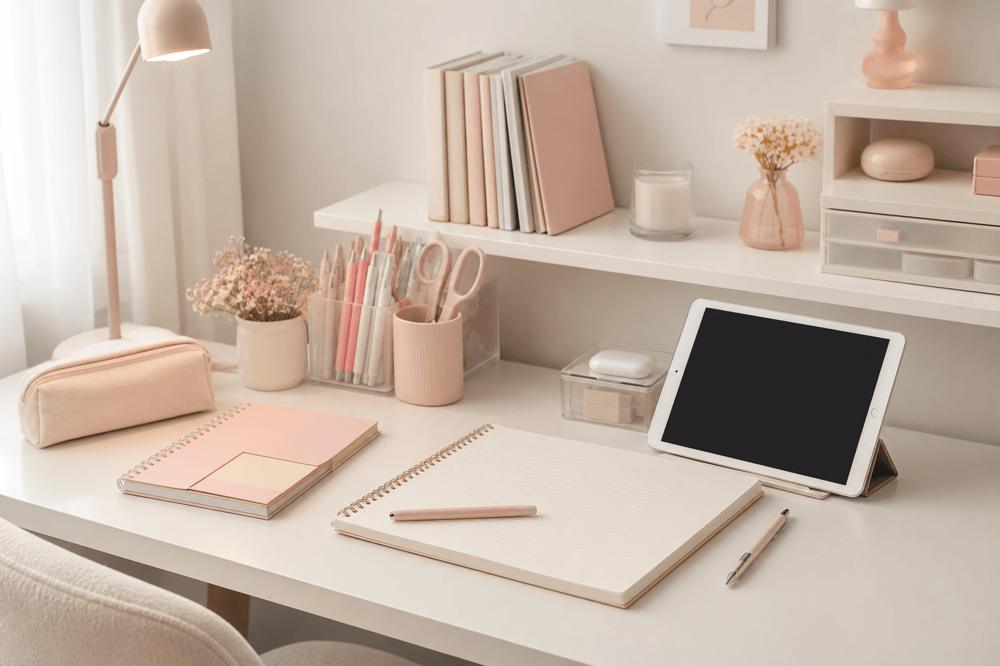

Kiếm tiền online từ góc học tập không còn là chuyện xa — format Study with me, Work with me, desk tour hay “học cùng Pomodoro” đang có lượng tìm kiếm và lượt xem ổn định trên YouTube và TikTok Việt Nam. Bài viết hướng dẫn cách bắt đầu từ con số 0: chọn format, setup góc quay đẹp trên camera, thiết bị tối thiểu, 5 hướng monetize thực tế và lộ trình 30 ngày — phù hợp học sinh, sinh viên và người làm việc tại nhà.
1. Vì sao Study with me / Work with me được tìm kiếm nhiều?
Đây là dạng nội dung ambient — người xem bật video để có cảm giác “có bạn học cùng”, giảm cô đơn khi ôn thi hoặc làm việc tại nhà. Trên TikTok và YouTube Việt Nam, các kênh study aesthetic thường có:
- Lượt xem lặp lại cao — video dài 1–2 giờ được xem nền nhiều lần.
- Chi phí sản xuất thấp — chỉ cần góc bàn đẹp, không cần quay mặt.
- Dễ gắn affiliate — giới thiệu đồ dùng học tập, sticker, sổ tay trong mô tả.
- Cộng đồng trung thành — người xem quay lại mỗi kỳ thi, mỗi mùa tựu trường.
2. Sáu format content góc học tập dễ làm
| Format | Độ dài gợi ý | Kênh phù hợp |
|---|---|---|
| Study with me | 45 phút – 3 giờ | YouTube (chính), TikTok (cắt highlight) |
| Work with me | 1 – 4 giờ | YouTube, Twitch (live) |
| Pomodoro live | 25 phút học + 5 phút nghỉ × N | TikTok LIVE, YouTube LIVE |
| Desk setup / tour | 3 – 8 phút | TikTok, YouTube Shorts, Reels |
| Decorate with me | 5 – 15 phút | TikTok — decor sổ, sticker, planner |
| Day in my life (học tập) | 1 – 3 phút (TikTok) / 8–15 phút (YT) | Cả hai — kể story cá nhân |
Người mới nên bắt đầu bằng desk tour 60 giây trên TikTok, sau đó thử Study with me 45 phút trên YouTube. Xem thêm scrapbook & study aesthetic để có ý tưởng decor khi quay.

3. Năm cách kiếm tiền từ video góc học tập
1. YouTube AdSense (video dài)
Cần đủ điều kiện chương trình đối tác YouTube (thường 1.000 subscriber + 4.000 giờ xem trong 12 tháng). Study with me 2 giờ giúp tích lũy giờ xem nhanh hơn clip ngắn.
2. TikTok LIVE & quà tặng
Livestream học Pomodoro, nhận quà ảo từ người xem. Phù hợp khi đã có vài trăm follower và tương tác ổn định.
3. Affiliate / TikTok Shop
Gắn link sản phẩm đồ dùng học tập, sticker, đèn bàn trong bio và mô tả video. Commission khi người xem mua qua link — không cần sản xuất hàng.
4. Bán template / planner PDF
Nếu bạn làm BuJo đẹp, bán file planner in hoặc template Notion. Liên quan bullet journal cho học sinh.
5. Hợp tác thương hiệu VPP
Khi kênh đủ lớn (thường từ vài nghìn follower chất lượng), shop văn phòng phẩm có thể gửi sản phẩm hoặc trả phí review trong desk tour.
| Cách kiếm tiền | Thời điểm bắt đầu | Độ khó |
|---|---|---|
| Affiliate / TikTok Shop | Ngay video đầu | Dễ |
| TikTok LIVE quà tặng | Sau ~500 follower | Trung bình |
| YouTube AdSense | Sau đủ điều kiện YPP | Trung bình – khó |
| Bán template | Khi có mẫu đẹp, ổn định | Trung bình |
| Hợp tác brand | 1.000+ follower tương tác tốt | Khó hơn |
4. Checklist setup góc quay đẹp trên camera
Camera “thấy” khác mắt người — ánh sáng và bố cục quan trọng hơn decor rườm rà. Checklist trước khi bấm quay:
Đèn bàn 4000K–5000K, tránh ngược sáng cửa sổ.
Tối đa 3 điểm nhấn trên mặt bàn.
2–3 màu chủ đạo (hồng–kem–trắng).
Hơi chếch từ trên (45°) hoặc ngang tầm mắt.
Sổ mở, bút, ly nước — tạo chuyển động nhẹ.
Tắt quạt ồn; có thể thêm nhạc lo-fi khi edit.
Chi tiết bố cục bàn và ánh sáng: cách trang trí bàn làm việc. Nếu quay cả laptop làm việc, áp dụng tương tự cho Work with me.
5. Thiết bị quay cơ bản (bắt đầu từ 0 đồng)
| Thiết bị | Mức tối thiểu | Nâng cấp (tuỳ chọn) |
|---|---|---|
| Camera | Điện thoại có sẵn | Webcam 1080p / máy ảnh mirrorless |
| Chân quay | Chân điện thoại ~50–150k | Tripod có cần gập |
| Ánh sáng | Đèn bàn học | Ring light / softbox nhỏ |
| Âm thanh | Mic điện thoại (im lặng khi quay) | Mic cài áo ~300–800k |
| Phần mềm edit | CapCut (miễn phí) | DaVinci Resolve (miễn phí) |
Study with me không bắt buộc lồng tiếng — nhiều kênh thành công chỉ có tiếng bút ghi, tiếng gõ phím và nhạc nền bản quyền (YouTube Audio Library, Epidemic Sound…).
6. Mẹo quay & edit video Study with me
- Quay một lần, đăng nhiều nơi — footage dài cắt thành 3–5 clip TikTok (desk moment, timelapse ghi chép).
- Thumbnail / cover frame — chọn khung hình có sổ mở + đèn bật; text ngắn: “2H Study with me”.
- Tiêu đề SEO — có từ khóa: “Study with me”, “Pomodoro”, “đêm khuya”, “ôn thi”.
- Mô tả video — ghi timestamp Pomodoro + link affiliate đồ dùng trên bàn.
- Đăng đều — 2 video/tuần ổn định quan trọng hơn 1 video “perfect” rồi nghỉ tháng.
7. Lộ trình 30 ngày bắt đầu
| Tuần | Việc cần làm |
|---|---|
| Tuần 1 | Setup góc quay, quay desk tour 60s, đăng TikTok + tạo kênh YouTube. |
| Tuần 2 | Quay Study with me 45 phút đầu tiên; học edit cắt đầu/cuối + nhạc nền. |
| Tuần 3 | Thử Pomodoro LIVE 25 phút; gắn link affiliate đồ trên bàn. |
| Tuần 4 | Đăng video thứ 2; phân tích retention — chỉnh ánh sáng / góc máy. |
Sau 30 ngày, đánh giá: video nào retention cao nhất? Góc máy nào đẹp nhất? Nhân đôi format đó thay vì đổi chủ đề liên tục.
8. Lỗi thường gặp khi làm Study with me
- Chờ góc hoàn hảo mới quay — clip đầu xấu vẫn tốt hơn không đăng gì.
- Background quá rối — mắt người xem không biết focus vào đâu.
- Thiếu sáng — hình grainy, màu vàng xấu, giảm thời gian xem.
- Kỳ vọng kiếm tiền ngay tuần 1 — monetize là kết quả của tần suất + chất lượng tích lũy.
- Vi phạm bản quyền nhạc — dùng nhạc có license rõ ràng cho YouTube/TikTok.
9. Câu hỏi thường gặp (FAQ)
Study with me kiếm tiền được bao nhiêu?
Thu nhập phụ thuộc lượt xem, kênh và cách monetize. Người mới thường bắt đầu từ affiliate và quà tặng LIVE; AdSense YouTube cần đủ điều kiện (1.000 subs + 4.000 giờ xem). Đừng kỳ vọng thu nhập lớn ngay tháng đầu — tập trung đều đặn 2–3 video/tuần.
Cần thiết bị gì để quay góc học tập Study with me?
Tối thiểu: điện thoại + chân quay + đèn bàn. Nâng cấp: mic rời, đèn ring light, laptop để livestream. Góc quay cần ánh sáng đủ, bàn gọn và background đồng bộ màu.
TikTok hay YouTube tốt hơn cho Study with me?
TikTok dễ viral clip ngắn, LIVE nhận quà — phù hợp bắt đầu nhanh. YouTube phù hợp video dài 1–3 giờ, tích lũy AdSense lâu dài. Nhiều creator làm cả hai: cắt highlight TikTok từ footage YouTube.
Mua đồ decor góc quay study aesthetic ở đâu?
KemStore.vn có sticker, sổ tay, bút gel đồng bộ màu #ee5f6d — decor góc quay đẹp trên camera. Đặt TikTok Shop (giá tốt) hoặc Shopee (giao toàn quốc).
Kết luận
Kiếm tiền online bằng cách quay góc học tập kiểu Study with me / Work with me là con đường khả thi cho học sinh, sinh viên — chi phí thấp, không cần lộ mặt, và có thể monetize dần qua affiliate rồi AdSense/LIVE. Bắt đầu từ desk tour ngắn, đầu tư ánh sáng và góc bàn gọn đẹp, đăng đều 2 video/tuần — phần còn lại là kiên trì và tối ưu từ dữ liệu retention.